6.3.2. Квантовые протоколы передачи ключей
6.3.2. Квантовые протоколы передачи ключей
Отличительной особенностью квантовых протоколов распределения ключей является то, что в них за основу обеспечения безопасности распределения ключей принимаются квантово-волновые свойства мельчайших субатомных частиц – фотонов. В принципе, в качестве носителей информации квантовой криптографией рассматриваются любые объекты, обладающие квантовыми свойствами. Передача информации всегда выполняется физическими средствами, например, при помощи электронов в проводных, или фотонов в волоконно-оптических линиях связи. Наблюдение за состоянием канала передачи информации рассматривается как измерение определенных параметров физических объектов – переносчиков информации [32, 8].
В квантовой криптографии в качестве наименьшего элемента для хранения информации используется кубит.
Как и бит, кубит допускает два собственных состояния, обозначаемых 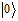 и  , но при этом может находиться и в их суперпозиции, т. е. в состоянии, 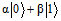, где α и β любые комплексные числа, удовлетворяющие условию 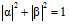.
, но при этом может находиться и в их суперпозиции, т. е. в состоянии, 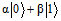, где α и β любые комплексные числа, удовлетворяющие условию 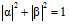.
При любом измерении состояния кубита он случайно переходит в одно из своих собственных состояний. Вероятности перехода в эти состояния равны, соответственно 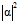 и 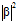. В результате наблюдения за множеством кубитов, осуществляется возможность косвенно делать выводы об их исходном состоянии.
Кубиты могут быть «запутаны» друг с другом, т. е. на них может быть наложена ненаблюдаемая связь, выражающаяся в том, что при всяком измерении одного из нескольких кубитов, остальные меняются согласованно с ним. Кроме того, совокупность запутанных между собой кубитов может интерпретироваться как заполненный квантовый регистр. При этом квантовый регистр может находиться не только во всевозможных комбинациях составляющих его кубитов, но и способен реализовывать всевозможные тонкие зависимости между ними.
В настоящее время в квантовой криптографии выделились два основных направления развития систем распределения ключей.
Первое направление основано на кодировании квантового состояния одиночной частицы и базируется на принципе невозможности различить абсолютно надежно два неортогональных квантовых состояния.
Защищенность первого направления основывается на теореме о запрете клонирования неизвестного квантового состояния. Благодаря унитарности и линейности квантовой механики невозможно создать точную копию неизвестного квантового состояния без воздействия на исходное состояние. Пусть, например, абонент А (отправитель) и абонент В (получатель) используют для передачи информации двухуровневые квантовые системы, кодируя состояния этих систем. Если абонент С (нарушитель) перехватывает носитель информации (фотон), отправленный абонентом А, измеряет его состояние и пересылает далее абоненту В, то состояние этого носителя уже будет отличаться от его состояния до измерения. Таким образом, «подслушивание» квантового канала приводит к ошибкам передачи, которые могут быть обнаружены легальными пользователями.
Основным протоколом квантовой криптографии на одночастичных состояниях является протокол BB84, который был предложен в 1984 году Чарльзом Беннетом и Жилем Брассаром. Отсюда и его название – BB84, под которым этот протокол известен в наше время [7].
Второе направление развития основано на эффекте квантового перепутывания (запутывания). Две квантово-механические системы (в том числе и разделенные пространственно) могут находиться в состоянии корреляции, так что измерение выбранной величины, осуществляемое над одной из систем, определит результат измерения этой величины на другой. Ни одна из запутанных систем не находится в определенном состоянии. Поэтому запутанное состояние не может быть записано как прямое произведение состояний систем. Состояние двух частиц со спином 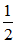 может служить примером запутанного состояния:
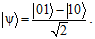
Измерение, проведенное на одной из двух подсистем, дает с равной вероятностью состояния  или 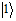. Состояние же другой подсистемы будет противоположным, т. е.
или 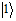. Состояние же другой подсистемы будет противоположным, т. е.  , если результат измерения на первой системе был , и наоборот.
, если результат измерения на первой системе был , и наоборот.
Базовым протоколом квантового распределения ключей на основе эффекта квантового запутывания является протокол EPR (Einstein-Podolsky-Rosen) [9].
Базовые принципы этих двух направлений легли в основу разработки всех протоколов квантового распределения ключей.
Протокол квантовой криптографии, основанный на одночастичных состояниях фотонов
В протоколе BB84 используются четыре квантовых состояния фотонов, например, направление вектора поляризации, одно из которых абонент А выбирает, в зависимости от передаваемого бита: 90 или 135 для «1», 45 или 0 для «0». Одна пара квантовых состояний соответствует и принадлежит базису «+». Другая пара квантовых состояний соответствует 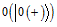 и 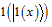 принадлежит базису «x».
Внутри обоих базисов состояния ортогональны, но состояния из разных базисов являются попарно неортогональными (неортогональность необходима для детектирования попыток съема информации).
Квантовые состояния системы можно описать следующим образом:
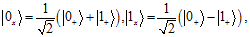
состояния 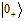 и 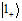 кодируют значения «0» и «1» в базисе «+», a и 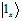 кодируют те же значения в базисе «x».
Базисы повернуты друг относительно друга на 45 градусов (рис. 6.14).
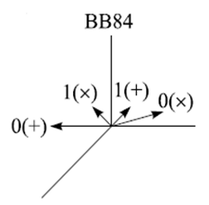 |
Рис. 6.14. Состояния поляризации фотонов, используемые в протоколе ВВ84 |
Этапы формирования ключей
1) Абонент А случайным образом выбирает один из базисов. Затем внутри базиса случайно выбирает одно из состояний, соответствующее 0 или 1, и посылает фотоны (рис. 6.15).
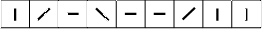 |
Рис. 6.15. Фотоны с различной поляризацией |
2) Абонент В случайно и независимо от абонента А выбирает для каждого поступающего фотона: прямолинейный (+) или диагональный () базис (рис. 6.16).
|
Рис. 6.16. Выбранный тип измерений |

Затем абонент В сохраняет результаты измерений (рис. 6.17).
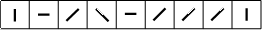 |
Рис. 6.17. Результаты измерений |
3) Абонент В по открытому общедоступному каналу связи сообщает, какой тип измерений был использован для каждого фотона, т. е. каков им был выбран базис, но результаты измерений остаются в секрете;
4) Абонент А сообщает абоненту В по открытому общедоступному каналу связи, какие измерения были выбраны в соответствии с исходным базисом абонента А (рис. 6.18).
Рис. 6.18. Случаи правильных замеров |
5) Далее абоненты оставляют только те случаи, в которых выбранные базисы совпали. Эти случаи переводят в биты (0 и 1) и таким образом получают ключ (рис. 6.19).
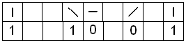
Рис. 6.19. Получение ключевой последовательности
по результатам правильных замеров
Число случаев, в которых выбранные базисы совпали, будет составлять в среднем половину длины исходной последовательности, т. е. 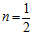 (пример определения количества фотонов, принятых абонентом В, показан в табл. 6.1).
Таблица 6.1 |
||||
Формирование квантового ключа по протоколу ВВ84 |
||||
Двоичный сигнал абонента А |
0 |
1 |
0 |
1 |
Поляризационный код абонента А |
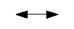 |
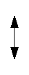 |
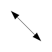 |
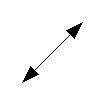 |
Детектирование абонентом В |
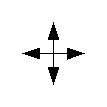 |
|
|
|
Двоичный сигнал абонента В |
0 |
1 |
? |
? |
Таким образом, в результате передачи ключа абонентом В, в случае отсутствия помех и искажений, в среднем, будут правильно зарегистрированы 50% фотонов.
Однако идеальных каналов связи не существует, и для формирования секретного ключа необходимо провести дополнительные процедуры поиска ошибок и усиления секретности. При этом для части последовательности бит абонентов, в которых базисы совпали, через открытый общедоступный канал связи случайным образом раскрываются и сравниваются значения бит.
Далее раскрытые биты отбрасываются. В идеальном квантовом канале (без шума) достаточно выявить несоответствие в одной раскрытой позиции для обнаружения злоумышленника. В реальной ситуации невозможно различить ошибки, произошедшие из-за шума и из-за воздействия злоумышленника.
Известно, что если процент ошибок (QBER) ≤ 11%, то абоненты из нераскрытой последовательности, после коррекции ошибок через открытый общедоступный канал связи и усиления секретности, могут извлечь секретный ключ, который будет у них одинаковым, не будучи известным нарушителю. Ключ, полученный до дополнительных операций с последовательностью, называется «сырым» ключом.
При коррекции ошибок эффективным способом для согласования последовательностей абонента А и абонента В является их «перемешивание» для более равномерного распределения ошибок и разбиение на блоки размером k, при котором вероятность появления блоков с более чем одной ошибкой пренебрежимо мала. Для каждого такого блока стороны производят проверку четности.
Когда в каком-либо блоке количество ошибок окажется четным, то даже с оптимальным размером блока некоторые из них могут быть не выявлены. Для их исключения производят перемешивание последовательности бит, разбиение ее на блоки и сравнение их четности производится еще несколько раз, каждый раз с уменьшением размера блоков до тех пор, пока абоненты А и В не придут к выводу, что вероятность ошибки в полученной последовательности пренебрежимо мала.
В результате всех этих действий абоненты А и В получают идентичные последовательности бит.
Эти биты и являются ключом, с помощью которого пользователи криптографической системы получают возможность зашифровывать и дешифровывать секретную информацию и обмениваться ей по незащищенному каналу связи.
Протокол квантового распределения ключей на основе эффекта квантового запутывания
Протокол квантового распределения ключей на основе эффекта квантового запутывания был предложен А. Экертом в 1991 году, в связи с чем в ряде источников [4, 25] он упоминается как протокол E91. Второе название протокола – EPR, так как он основан на парадоксе Эйнштейна − Подольского − Розена. В протоколе предлагается использовать, например, пары фотонов, рождающихся в антисимметричных поляризационных состояниях. Перехват одного из фотонов пары не приносит нарушителю никакой информации, но является для абонентов А и В сигналом о том, что их разговор подслушивается.
Эффект EPR возникает, когда сферически симметричный атом излучает два фотона в противоположных направлениях в сторону двух наблюдателей. Фотоны излучаются с неопределенной поляризацией, но в силу симметрии их поляризации всегда противоположны. Важной особенностью этого эффекта является то, что поляризация фотонов становится известной только после измерения. На основе EPR А. Экерт предложил протокол [25], который гарантирует безопасность пересылки и хранения ключа. Отправитель генерирует некоторое количество EPR фотонных пар. Один фотон из каждой пары он оставляет для себя, второй посылает своему партнеру. При этом, если эффективность регистрации близка к единице, при получении отправителем значения поляризации 1 его партнер зарегистрирует значение 0 и наоборот. Ясно, что таким образом партнеры всякий раз, когда требуется, могут получить идентичные псевдослучайные кодовые последовательности.
Пусть вначале создается N максимально запутанных EPR-пар фотонов, затем один фотон из каждой пары посылается абоненту А, а другой – абоненту В. Три возможных квантовых состояния для этих EPR-пар можно записать следующим образом:
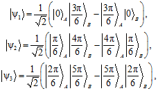
что в общем виде может быть записано как
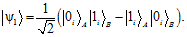
Последняя формула явно показывает, что каждое из этих трех состояний кодирует биты «0» и «1» в уникальном базисе. Затем абоненты А и В осуществляют измерения на своих частях разделенных EPR-пар, применяя соответствующие проекторы:
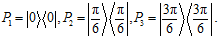
Абонент А записывает измеренные биты, а абонент В записывает их дополнения до 1. Результаты измерений, в которых абоненты выбрали одинаковые базисы, формируют «сырой» ключ. Для остальных результатов абоненты А и В проводят проверку выполнения неравенства Белла1 как тест на присутствие нарушителя.
Получение источников спутанных пар фотонов с высокой степенью корреляции и продолжительным временем жизни позволило провести эксперименты по реализации данного протокола.
Широкому распространению протоколов квантового распределения ключей мешает наличие ряда ограничений, связанных с физическими особенностями распространения фотонов в линиях связи (оптоэлектронных, спутниковых и др.).
К основным из них следует отнести:
1. Свойства каналов передачи информации:
− эффект двойного лучепреломления;
− изменение поляризации фотонов при прохождении среды;
− турбулентность, изменение локального показателя преломления воздушной среды;
− фазовое дрожание;
− неизбежные потери фотонов (поглощение).
2. Принцип нелокальности спутанных состояний.
3. Чувствительность приемников фотонов (лавинные фотодиоды, однофотонные охлаждаемые приемники).
Существуют другие квантовые протоколы, например, протокол Гольденберга − Вайдмана, протокол Коаши − Имото.
1 Из этого неравенства следует вывод, что никакая статистическая теория с дополнительным параметром не может обеспечить с произвольной точностью такой же корреляции, что и квантово-механическое уравнение. Таким образом, невозможно провести статистическое предсказание поведения частиц при проведении эксперимента типа эксперимента Эйнштейна-Подольского-Розена.